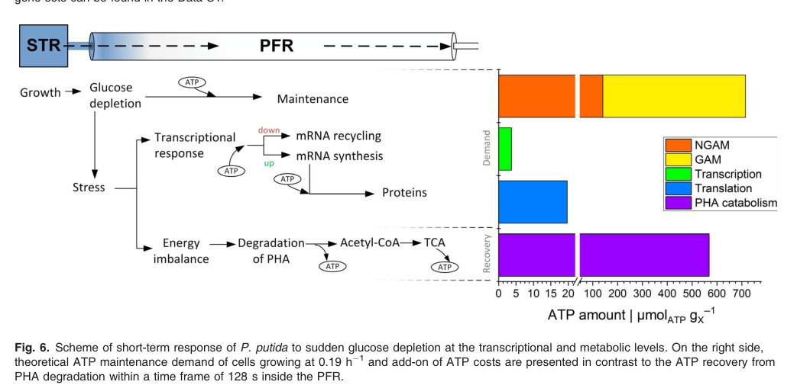

PhaZ is the intracellular medium-chain-length polyhydroxyalkanoate (mcl-PHA) depolymerase of Pseudomonas putida KT2440. It is associated with PHA granules and mobilizes stored polyester during carbon-storage turnover, with knockout strains accumulating higher and more persistent PHA levels. The KT2440 locus is PP_5004 (UniProt Q88D24); UniProt currently exposes the primary gene name as phaB, but the protein description, ESTHER family assignment, and Pseudomonas literature identify the gene product as PhaZ.
Definition: The chemical reactions and pathways resulting in the breakdown of poly(3-hydroxyalkanoate), an intracellular carbon- and energy-storage polyester.
Justification: GO has the specific molecular-function term GO:0050527 and the broader process term GO:0042620, but it lacks a direct catabolic-process term for intracellular PHA mobilization by depolymerases such as PhaZ.
Parent term: poly(3-hydroxyalkanoate) metabolic process
Supporting Evidence:
| GO Term | Evidence | Action | Reason |
|---|---|---|---|
|
GO:0004806
triacylglycerol lipase activity
|
IEA
GO_REF:0000118 |
MODIFY |
Summary: This automated TreeGrafter annotation assigns a generic lipase substrate class that does not match the biology of PP_5004. The protein is curated in UniProt as a poly(3-hydroxyalkanoate) depolymerase, and the relevant GO term already exists as GO:0050527.
Reason: Replace the triacylglycerol-specific activity term with the dedicated PHA depolymerase term. PhaZ mobilizes intracellular mcl-PHA granules, not glycerolipids.
Proposed replacements:
poly(3-hydroxyoctanoate) depolymerase activity
Supporting Evidence:
file:PSEPK/phaZ/phaZ-uniprot.txt
SubName: Full=Poly(3-hydroxyalkanoate) depolymerase
file:PSEPK/phaZ/phaZ-notes.md
The best current molecular-function term is GO:0050527 poly(3-hydroxyoctanoate) depolymerase activity rather than triacylglycerol lipase activity.
file:PSEPK/phaZ/phaZ-deep-research-falcon.md
acting **almost exclusively on mcl-PHAs**
|
|
GO:0046503
glycerolipid catabolic process
|
IEA
GO_REF:0000118 |
MODIFY |
Summary: This process term is misleading for phaZ. PhaZ acts in intracellular PHA mobilization at PHA granules, whereas glycerolipid catabolism implies a different substrate class and cellular context.
Reason: GO:0042620 poly(3-hydroxyalkanoate) metabolic process is the closest existing biological-process term. A more specific catabolic child term would be preferable, but the current glycerolipid annotation should not be kept.
Proposed replacements:
poly(3-hydroxyalkanoate) metabolic process
Supporting Evidence:
file:PSEPK/phaZ/phaZ-notes.md
GO:0046503 glycerolipid catabolic process is misleading because intracellular PHA mobilization is not glycerolipid catabolism; GO:0042620 poly(3-hydroxyalkanoate) metabolic process is closer, but GO currently lacks a direct poly(3-hydroxyalkanoate) catabolic process term for intracellular PHA mobilization.
file:PSEPK/phaZ/phaZ-deep-research-falcon.md
PP_5004 functions in **PHA mobilization**, coupling polymer breakdown to carbon and energy homeostasis
|
|
GO:0050527
poly(3-hydroxyoctanoate) depolymerase activity
|
IDA | NEW |
Summary: This is the best available molecular-function term for phaZ. Biochemical work on the P. putida ortholog established PhaZ as an intracellular granule-associated mcl-PHA depolymerase and identified 3-hydroxyoctanoate as the major hydrolysis product.
Reason: This term captures the substrate specificity of the enzyme substantially better than the current TreeGrafter lipase annotation.
Supporting Evidence:
file:PSEPK/phaZ/phaZ-notes.md
PhaZ is the intracellular granule-associated depolymerase that mobilizes stored medium-chain-length PHA in KT2440.
file:PSEPK/phaZ/phaZ-notes.md
Biochemical work on the highly similar KT2442 ortholog showed that 3-hydroxyoctanoate monomer is the main hydrolysis product and classified PhaZ as an endo/exo-mcl-PHA depolymerase.
file:PSEPK/phaZ/phaZ-deep-research-falcon.md
major released products included **3-hydroxyoctanoate** with minor **3-hydroxyhexanoate**
file:PSEPK/phaZ/phaZ-deep-research-falcon.md
A catalytic triad of **Ser102, Asp221, and His248** has been identified for the KT2440 intracellular depolymerase
|
|
GO:0042620
poly(3-hydroxyalkanoate) metabolic process
|
IMP | NEW |
Summary: Genetic perturbation data show that phaZ is part of in vivo PHA turnover. Deleting phaZ increases and stabilizes PHA accumulation, while PhaZ dosage influences flux through the PHA cycle.
Reason: This is the nearest existing biological-process term for intracellular PHA mobilization in KT2440.
Supporting Evidence:
file:PSEPK/phaZ/phaZ-notes.md
Deletion of phaZ increases and stabilizes PHA accumulation, showing that PP_5004 participates in poly(3-hydroxyalkanoate) metabolic process in vivo.
file:PSEPK/phaZ/phaZ-deep-research-falcon.md
phaZ deletion is often used to strengthen polymer accumulation
file:PSEPK/phaZ/phaZ-deep-research-falcon.md
crude extracts from a **PhaZ-deficient mutant did not release 3-hydroxy fatty acids**, directly supporting depolymerase function
|
|
GO:0070088
polyhydroxyalkanoate granule
|
IDA | NEW |
Summary: PhaZ is a granule-associated intracellular depolymerase rather than a soluble glycerolipid catabolic enzyme. GO has a dedicated cellular component term for the PHA granule, which is the relevant site of action.
Reason: Granule association is central to PhaZ function and is more informative than generic cytoplasmic localization.
Supporting Evidence:
file:PSEPK/phaZ/phaZ-notes.md
PhaZ is associated with polyhydroxyalkanoate granules rather than glycerolipid catabolism.
file:PSEPK/phaZ/phaZ-deep-research-falcon.md
Evidence places PhaZ as an **intracellular, granule-associated** enzyme acting on the surface of PHA inclusions rather than a secreted extracellular depolymerase
|
Q: Which of the additional putative PhaZ paralogs in the KT2440 genome are active depolymerases, and do they target distinct PHA chemistries or growth states?
Q: What nutritional or regulatory signals control phaZ expression and granule recruitment during transitions from PHA accumulation to mobilization?
Experiment: Measure PHA amount and monomer composition over time in wild type, clean Delta phaZ, and complemented PP_5004 strains during nitrogen starvation and refeeding on octanoate or lignin-derived substrates.
Hypothesis: Loss of phaZ blocks intracellular PHA mobilization and prolongs high polymer loads after accumulation.
Type: genetic perturbation plus polymer quantification
Experiment: Localize epitope-tagged or antibody-detected PhaZ across growth phases by fluorescence microscopy or immunogold electron microscopy and correlate localization with granule morphology and turnover.
Hypothesis: PhaZ is recruited to PHA granules specifically during mobilization phases.
Type: localization assay
Experiment: Test purified PP_5004 against mcl-PHA latex, defined hydroxyalkanoate oligomers, triacylglycerols, and p-nitrophenyl esters to refine substrate specificity for GO curation.
Hypothesis: PP_5004 prefers intracellular mcl-PHA substrates and does not behave as a generic triacylglycerol lipase.
Type: biochemical enzyme assay
The research report should be a detailed narrative explaining the function, biological processes, and localization of the gene product. Citations should be given for all claims.
You should prioritize authoritative reviews and primary scientific literature when conducting research. You can supplement
this with annotations you find in gene/protein databases, but these can be outdated or inaccurate.
We are specifically interested in the primary function of the gene - for enzymes, what reaction is catalyzed, and what is the substrate specificity? For transporters, what is the substrate? For structural proteins or adapters, what is the broader structural role? For signaling molecules, what is the role in the pathway.
We are interested in where in or outside the cell the gene product carries out its function.
We are also interested in the signaling or biochemical pathways in which the gene functions. We are less interested in broad pleiotropic effects, except where these elucidate the precise role.
Include evidence where possible. We are interested in both experimental evidence as well as inference from structure, evolution, or bioinformatic analysis. Precise studies should be prioritized over high-throughput, where available.
UniProt Q88D24 is annotated as a poly(3-hydroxyalkanoate) depolymerase in Pseudomonas putida KT2440, with ordered locus name PP_5004 (strain ATCC 47054 / DSM 6125 / NCIMB 11950 / KT2440). Multiple P. putida KT2440-focused sources identify PP_5004 as phaZ, an intracellular PHA depolymerase located in the canonical pha gene region with the class II mcl-PHA synthases (phaC1 PP_5003 and phaC2 PP_5005). (mezzina2021engineeringnativeand pages 7-10)
Symbol ambiguity note (phaB vs phaZ): some literature refers to the depolymerase as “phaB” even while describing depolymerase function (not the canonical biosynthetic reductase usually called phaB), creating a nomenclature collision. For example, a KT2440 industrial-stress transcriptomics study describes PHA monomers being released by “PHA depolymerase (phaB)” in the PHA cycle context, consistent with PP_5004’s depolymerase function rather than classical phaB reductase function. (ankenbauer2020pseudomonasputidakt2440 pages 10-12)
PHAs are intracellular storage polyesters accumulated as granules (inclusion bodies), commonly under carbon excess with limitation of other nutrients, and serve as reserves of carbon/energy and redox buffering. (mukherjee2023microbialpolyhydroxyalkanoate(pha) pages 6-7)
PHA granules are described as intracellular structures with a surface (phospholipid monolayer) bearing granule-associated proteins (GAPs), including biosynthetic enzymes (e.g., PhaC), structural proteins (phasins), regulators, and depolymerases (PhaZ) involved in mobilization and degradation of stored polymer. (vicente2023theroleof pages 8-10)
For Pseudomonas mcl-PHA systems, the KT2440 enzyme is described as an intracellular mcl-PHA depolymerase (PhaZKT) and is contrasted with extracellular PHA depolymerases: PhaZKT is reported to have an α/β-hydrolase fold and a lid domain that is emphasized as a key structural determinant associated with intracellular action and substrate specificity. (eugenio2025revealingtheessential pages 1-2)
A compact evidence-backed annotation is provided in the table below.
| Attribute | Evidence summary | Best supporting citations |
|---|---|---|
| Gene symbol / identity | For UniProt Q88D24 in Pseudomonas putida KT2440, the literature consistently identifies locus PP_5004 as phaZ, the intracellular PHA depolymerase in the canonical pha region with phaC1 (PP_5003) and phaC2 (PP_5005). A 2020 systems study also refers to the same depolymerase as “PHA depolymerase (phaB),” indicating annotation/symbol ambiguity rather than a different function. | (mezzina2021engineeringnativeand pages 7-10, ankenbauer2020pseudomonasputidakt2440 pages 10-12) |
| Symbol ambiguity: phaB vs phaZ | The symbol phaB is classically used in many bacteria for acetoacetyl-CoA reductase in the biosynthetic phaABC pathway, whereas phaZ denotes PHA depolymerase. Reviews distinguishing biosynthetic clusters from degradative enzymes support that a depolymerase assignment for PP_5004 aligns with phaZ, not canonical biosynthetic phaB. | (vicente2023theroleof pages 8-10, mezzina2021engineeringnativeand pages 7-10) |
| Locus tag | PP_5004 is the KT2440 ordered locus name linked to the depolymerase gene situated between the two class II mcl-PHA synthase genes in the pha cluster. This genomic context strongly supports its role in mcl-PHA turnover rather than de novo monomer biosynthesis. | (mezzina2021engineeringnativeand pages 7-10) |
| Protein name | The protein product is an intracellular medium-chain-length polyhydroxyalkanoate depolymerase (PhaZKT), described as a model enzyme for intracellular mcl-PHA mobilization in P. putida KT2440. | (eugenio2025revealingtheessential pages 2-4, eugenio2025revealingtheessential pages 1-2) |
| Enzyme class / EC | Functionally, PP_5004 is a hydrolase/esterase-type depolymerase that cleaves ester bonds in intracellular PHA granules to release 3-hydroxyalkanoate monomers. The supplied UniProt annotation gives EC 3.1.1.-, which is consistent with a carboxylic ester hydrolase assignment. | (ren2010influenceofgrowth pages 2-5, ren2010influenceofgrowth pages 1-2) |
| Domains / fold | PhaZKT is reported to adopt an α/β-hydrolase fold and to contain a lid domain covering the active site, a structural feature highlighted as important for intracellular mcl-PHA depolymerases and contrasted with many extracellular depolymerases that lack such a lid. | (eugenio2025revealingtheessential pages 2-4, eugenio2025revealingtheessential pages 1-2) |
| Catalytic residues | A catalytic triad of Ser102, Asp221, and His248 has been identified for the KT2440 intracellular depolymerase. Mutational work further indicates that lid integrity is essential for catalytic function. | (eugenio2025revealingtheessential pages 2-4, eugenio2025revealingtheessential pages 1-2) |
| Substrate specificity | The enzyme is described as acting almost exclusively on mcl-PHAs, not broadly on short-chain-length PHAs. In assays with Pseudomonas depolymerase activity, major released products included 3-hydroxyoctanoate with minor 3-hydroxyhexanoate, matching mcl-PHA derived from octanoate-grown cells. | (eugenio2025revealingtheessential pages 1-2, ren2010influenceofgrowth pages 2-5) |
| Cellular localization | Evidence places PhaZ as an intracellular, granule-associated enzyme acting on the surface of PHA inclusions rather than a secreted extracellular depolymerase. Reviews of PHA granule biology also list PhaZ among granule-surface proteins. | (ren2010influenceofgrowth pages 1-2, vicente2023theroleof pages 8-10) |
| Reaction / immediate products | In vitro assays measured release of 3-hydroxy fatty acid monomers from PHA by PhaZ-containing extracts, whereas a phaZ mutant lacked this activity. These released 3-HAs can then be activated to hydroxyacyl-CoAs for downstream metabolism. | (ren2010influenceofgrowth pages 2-5, ankenbauer2020pseudomonasputidakt2440 pages 10-12) |
| Pathway role | PP_5004 functions in PHA mobilization, coupling polymer breakdown to carbon and energy homeostasis. The released 3-HAs/hydroxyacyl intermediates can be reactivated and either re-enter the PHA cycle or feed β-oxidation and central metabolism, giving the PHA cycle both anabolic and catabolic roles. | (mezzina2021engineeringnativeand pages 7-10, ankenbauer2020pseudomonasputidakt2440 pages 10-12) |
| Physiological context | Under transient glucose starvation, P. putida KT2440 is proposed to rapidly access intracellular PHA stores; 3-HA degradation is presented as a short-term survival program that helps restore adenylate energy charge and maintain ATP supply. This aligns with prior work framing PHA turnover as central to carbon/energy balance. | (ankenbauer2020pseudomonasputidakt2440 pages 10-12, ankenbauer2020pseudomonasputidakt2440 pages 9-10, eugenio2025revealingtheessential pages 1-2) |
| Experimental evidence for function | A knockout study in P. putida U showed that crude extracts from a PhaZ-deficient mutant did not release 3-hydroxy fatty acids, directly supporting depolymerase function. In KT2440, targeted lid deletions abolished depolymerase activity, providing additional structure-function evidence. | (ren2010influenceofgrowth pages 2-5, eugenio2025revealingtheessential pages 1-2) |
| Enzyme regulation / granule context | PhaZ activity coexists with PhaC activity on PHA granules, supporting simultaneous synthesis and degradation. Changes in phasin abundance on granules influence this metabolic cycle, indicating that PP_5004 acts within a regulated granule-associated protein network. | (ren2010influenceofgrowth pages 1-2, mezzina2021engineeringnativeand pages 7-10) |
| Key quantitative data | In P. putida U, PhaZ activity increased ~1.5-fold during growth and was measured at roughly 5–10 U g⁻¹ total protein; released monomers were mainly 3-hydroxyoctanoate with some 3-hydroxyhexanoate. In KT2440 under glucose limitation, intracellular 3-HAs were reported at about 1.1% of biomass, and theoretical ATP recovery from 3-HA oxidation was estimated to cover ~79.6% to ~100% of maintenance demand depending on P/O assumptions. | (ren2010influenceofgrowth pages 2-5, ankenbauer2020pseudomonasputidakt2440 pages 9-10) |
Table: This table summarizes the verified identity and function of UniProt Q88D24 / PP_5004 in Pseudomonas putida KT2440, emphasizing that the protein is best supported as the intracellular mcl-PHA depolymerase PhaZ. It also flags the important phaB/phaZ symbol ambiguity and compiles the strongest evidence for substrate specificity, localization, pathway role, and quantitative physiology.
PP_5004 (PhaZ) is supported as a hydrolase/esterase-type depolymerase that cleaves ester bonds in intracellular PHA to release 3-hydroxyalkanoate (3-HA) monomers, which can then be metabolically activated and oxidized. Experimental evidence for depolymerase activity includes an in vitro assay where depolymerase activity is quantified as release of 3-hydroxy fatty acids (GC after methanolysis), and a PhaZ-deficient mutant lacks detectable monomer release. (ren2010influenceofgrowth pages 2-5)
In the context of Pseudomonas mcl-PHA granules, depolymerase activity releases predominantly 3-hydroxyoctanoate with minor 3-hydroxyhexanoate under the tested conditions, consistent with turnover of medium-chain-length PHA accumulated from octanoate. (ren2010influenceofgrowth pages 2-5)
Structural/functional analysis of the KT2440 depolymerase describes it as highly substrate-specific, acting almost exclusively on mcl-PHAs. (eugenio2025revealingtheessential pages 1-2)
PhaZKT is described as an α/β-hydrolase-fold enzyme with a lid domain. A catalytic triad is reported as Ser102–Asp221–His248, and mutational analysis shows that perturbing the lid region can abolish depolymerase activity, supporting the lid’s functional necessity for polymer depolymerization (not merely generic esterase activity). (eugenio2025revealingtheessential pages 2-4, eugenio2025revealingtheessential pages 1-2)
Multiple sources place PhaZ function at the intracellular PHA granule surface (granule-associated), rather than as a secreted depolymerase. (ren2010influenceofgrowth pages 1-2, vicente2023theroleof pages 8-10)
PHA metabolism in P. putida is commonly interpreted as a dynamic cycle that can simultaneously support polymer synthesis and polymer mobilization, tuning carbon and energy fluxes in response to environmental conditions. A KT2440 review highlights that pha gene products govern fluxes toward either PHA accumulation or polymer hydrolysis and frames this cycle as central to global carbon metabolism. (mezzina2021engineeringnativeand pages 7-10)
A key physiological framing in KT2440 under industrially relevant heterogeneous mixing is that intracellular 3-HAs/PHA-derived intermediates act as rapidly accessible energy buffers during transient carbon starvation. The study proposes that 3-HAs released from PHA granules by the depolymerase (referred to there as “phaB”) are activated (acyl-CoA synthetases) and can either re-enter polymerization or feed catabolism (β-oxidation, acetyl-CoA, TCA cycle), emphasizing a dual anabolic/catabolic PHA cycle. (ankenbauer2020pseudomonasputidakt2440 pages 10-12)
The same study reports quantitative estimates supporting this energy-buffer model: intracellular 3-HAs were measured at ~1.1% of biomass under glucose-limited conditions and theoretical ATP recovery from 3-HA oxidation was estimated to cover ~79.6% of ATP maintenance demand under one P/O assumption, and approximately 100% under higher P/O ratios. (ankenbauer2020pseudomonasputidakt2440 pages 9-10)
A schematic of this short-term starvation response, including PHA degradation toward acetyl-CoA and ATP recovery, is shown in Figure 6 of Ankenbauer et al. 2020. (ankenbauer2020pseudomonasputidakt2440 media c3763504)
A 2024 Molecular & Cellular Proteomics study built a KT2440 PHA-centered protein interaction map using affinity purification–mass spectrometry (AP-MS) with eYFP-tagged baits, including PhaZ (Q88D24). In the primary screen, PhaZ yielded a small set of candidate interactors (“four proteins including the bait”), and the authors caution that many hits (e.g., lipoproteins, ribosomal proteins) can be artefactual and require independent validation; overall, canonical PHA pathway proteins showed limited mutual interconnections in this dataset. (kelly2024comprehensiveproteomicsanalysis pages 7-8)
The same work notes PhaZ is previously shown to be granule-associated but lacks a canonical phasin domain, and it focuses on nominating other high-confidence granule-associated proteins (e.g., identifying OprL as a new phasin), rather than redefining PhaZ function. (kelly2024comprehensiveproteomicsanalysis pages 5-7)
Interpretation: for PP_5004 annotation, Kelly et al. 2024 primarily reinforces that PhaZ is treated as a central PHA operon protein in KT2440 systems-level datasets, while also illustrating that interaction networks around carbonosomes/PHA granules remain incompletely resolved and can be noisy without orthogonal validation. (kelly2024comprehensiveproteomicsanalysis pages 7-8, kelly2024comprehensiveproteomicsanalysis pages 5-7)
Dong et al. (Nov 2024) engineered Pseudomonas putida strains for improved mcl-PHA synthesis from glucose, using a base strain already carrying ΔphaZ (and ΔhsdR). In this background, multiple pathway modifications increased mcl-PHA titers; the authors report, for example, a strain reaching 57.3 wt% mcl-PHA and 2.5 g/L titer, and after optimization 59.1 wt% and 6.8 g/L. (dong2024modificationofglucose pages 1-2)
Interpretation: although this study is not a direct functional characterization of PhaZ enzyme chemistry, it reflects current applied consensus that removing depolymerase activity can improve net intracellular polymer accumulation in engineered production strains. (dong2024modificationofglucose pages 1-2)
A 2024 comprehensive review explicitly states that phaZ encodes a PHA depolymerase involved in PHA degradation, and that phaZ deletion is often used to strengthen polymer accumulation; it compiles multiple quantitative examples across organisms. (gonzalezrojo2024advancesinmicrobial pages 7-9)
Notable quantitative examples relevant to Pseudomonas include an increase in P. putida KTMQ01 mcl-PHA from 66 wt% to 86 wt% upon phaZ deletion, and reported KT2440 cases where removing phaZ in an engineered context increased mcl-PHA titer 3.3-fold (116 ± 35 mg/L vs 35 ± 5 mg/L) and increased accumulation 100% (17.7% vs 8.9%) on lignin. (gonzalezrojo2024advancesinmicrobial pages 7-9)
Current industrially oriented PHA strain engineering frequently includes eliminating PHA depolymerase activity (ΔphaZ) to increase intracellular polymer yields and titers, often combined with flux redirection strategies. This is explicitly described as a common approach with industrial scaling potential in the 2024 review literature. (gonzalezrojo2024advancesinmicrobial pages 7-9)
Ankenbauer et al. (2020) connects PHA/3-HA mobilization to P. putida KT2440’s ability to withstand industrial-scale heterogeneous mixing / repeated glucose starvation, proposing that rapid access to intracellular carbon buffers supports restoration of adenylate energy charge and maintenance energy under short-term carbon shortage. (ankenbauer2020pseudomonasputidakt2440 pages 10-12, ankenbauer2020pseudomonasputidakt2440 pages 9-10)
Across authoritative reviews, three convergent expert-level points emerge:
1) PHA granules are intracellular organelles whose surfaces host enzymes for both synthesis and degradation, including PhaZ depolymerases. (vicente2023theroleof pages 8-10)
2) Genetic deletion of phaZ is widely used in applied biotechnology to increase net polymer accumulation, but outcomes can be context-dependent across organisms and growth conditions. (gonzalezrojo2024advancesinmicrobial pages 7-9)
3) For end-of-life and biodegradation, PHA degradation ultimately yields benign end products: CO2 + water (aerobic) and CO2 + methane (anaerobic), linking PHA metabolism and depolymerase biology to circular-economy framing. (vicente2023theroleof pages 8-10, mukherjee2023microbialpolyhydroxyalkanoate(pha) pages 6-7)
PP_5004 (UniProt Q88D24) in Pseudomonas putida KT2440 should be annotated as:
- Gene: phaZ (synonym used in some sources: phaB in depolymerase context; treat as nomenclature ambiguity) (mezzina2021engineeringnativeand pages 7-10, ankenbauer2020pseudomonasputidakt2440 pages 10-12)
- Product: intracellular medium-chain-length PHA depolymerase (granule-associated) (eugenio2025revealingtheessential pages 1-2, ren2010influenceofgrowth pages 1-2)
- Molecular function: carboxylic-ester hydrolase acting on intracellular mcl-PHA, releasing 3-hydroxyalkanoate monomers; catalytic triad Ser102–Asp221–His248; α/β-hydrolase fold with essential lid domain (ren2010influenceofgrowth pages 2-5, eugenio2025revealingtheessential pages 1-2)
- Biological process: PHA mobilization/turnover contributing to carbon and energy homeostasis, especially under transient starvation (mezzina2021engineeringnativeand pages 7-10, ankenbauer2020pseudomonasputidakt2440 pages 10-12)
- Cellular component: PHA granule surface (granule-associated, intracellular) (vicente2023theroleof pages 8-10, ren2010influenceofgrowth pages 1-2)
References
(mezzina2021engineeringnativeand pages 7-10): Mariela P. Mezzina, María Tsampika Manoli, M. Auxiliadora Prieto, and Pablo I. Nikel. Engineering native and synthetic pathways in pseudomonas putida for the production of tailored polyhydroxyalkanoates. Biotechnology Journal, Nov 2021. URL: https://doi.org/10.1002/biot.202000165, doi:10.1002/biot.202000165. This article has 146 citations and is from a peer-reviewed journal.
(ankenbauer2020pseudomonasputidakt2440 pages 10-12): Andreas Ankenbauer, Richard A. Schäfer, Sandra C. Viegas, Vânia Pobre, Björn Voß, Cecília M. Arraiano, and Ralf Takors. Pseudomonas putida kt2440 is naturally endowed to withstand industrial‐scale stress conditions. Microbial Biotechnology, 13:1145-1161, Apr 2020. URL: https://doi.org/10.1111/1751-7915.13571, doi:10.1111/1751-7915.13571. This article has 94 citations and is from a peer-reviewed journal.
(mukherjee2023microbialpolyhydroxyalkanoate(pha) pages 6-7): Anindya Mukherjee and Martin Koller. Microbial polyhydroxyalkanoate (pha) biopolymers—intrinsically natural. Bioengineering, 10:855, Jul 2023. URL: https://doi.org/10.3390/bioengineering10070855, doi:10.3390/bioengineering10070855. This article has 83 citations.
(vicente2023theroleof pages 8-10): Diogo Vicente, Diogo Neves Proença, and Paula V. Morais. The role of bacterial polyhydroalkanoate (pha) in a sustainable future: a review on the biological diversity. International Journal of Environmental Research and Public Health, 20:2959, Feb 2023. URL: https://doi.org/10.3390/ijerph20042959, doi:10.3390/ijerph20042959. This article has 200 citations.
(eugenio2025revealingtheessential pages 1-2): Laura Isabel de Eugenio, José Daniel Jiménez, Elena Ramos, Lara Serrano-Aguirre, Jesus M. Sanz, and M. Auxiliadora Prieto. Revealing the essential role of the lid in mclpha intracellular depolymerase from pseudomonas putida kt2440. Applied Microbiology and Biotechnology, Oct 2025. URL: https://doi.org/10.1007/s00253-025-13605-z, doi:10.1007/s00253-025-13605-z. This article has 2 citations and is from a domain leading peer-reviewed journal.
(eugenio2025revealingtheessential pages 2-4): Laura Isabel de Eugenio, José Daniel Jiménez, Elena Ramos, Lara Serrano-Aguirre, Jesus M. Sanz, and M. Auxiliadora Prieto. Revealing the essential role of the lid in mclpha intracellular depolymerase from pseudomonas putida kt2440. Applied Microbiology and Biotechnology, Oct 2025. URL: https://doi.org/10.1007/s00253-025-13605-z, doi:10.1007/s00253-025-13605-z. This article has 2 citations and is from a domain leading peer-reviewed journal.
(ren2010influenceofgrowth pages 2-5): Qun Ren, Guy de Roo, Bernard Witholt, Manfred Zinn, and Linda Thöny-Meyer. Influence of growth stage on activities of polyhydroxyalkanoate (pha) polymerase and pha depolymerase in pseudomonas putida u. BMC Microbiology, 10:254-254, Oct 2010. URL: https://doi.org/10.1186/1471-2180-10-254, doi:10.1186/1471-2180-10-254. This article has 41 citations and is from a peer-reviewed journal.
(ren2010influenceofgrowth pages 1-2): Qun Ren, Guy de Roo, Bernard Witholt, Manfred Zinn, and Linda Thöny-Meyer. Influence of growth stage on activities of polyhydroxyalkanoate (pha) polymerase and pha depolymerase in pseudomonas putida u. BMC Microbiology, 10:254-254, Oct 2010. URL: https://doi.org/10.1186/1471-2180-10-254, doi:10.1186/1471-2180-10-254. This article has 41 citations and is from a peer-reviewed journal.
(ankenbauer2020pseudomonasputidakt2440 pages 9-10): Andreas Ankenbauer, Richard A. Schäfer, Sandra C. Viegas, Vânia Pobre, Björn Voß, Cecília M. Arraiano, and Ralf Takors. Pseudomonas putida kt2440 is naturally endowed to withstand industrial‐scale stress conditions. Microbial Biotechnology, 13:1145-1161, Apr 2020. URL: https://doi.org/10.1111/1751-7915.13571, doi:10.1111/1751-7915.13571. This article has 94 citations and is from a peer-reviewed journal.
(ankenbauer2020pseudomonasputidakt2440 media c3763504): Andreas Ankenbauer, Richard A. Schäfer, Sandra C. Viegas, Vânia Pobre, Björn Voß, Cecília M. Arraiano, and Ralf Takors. Pseudomonas putida kt2440 is naturally endowed to withstand industrial‐scale stress conditions. Microbial Biotechnology, 13:1145-1161, Apr 2020. URL: https://doi.org/10.1111/1751-7915.13571, doi:10.1111/1751-7915.13571. This article has 94 citations and is from a peer-reviewed journal.
(kelly2024comprehensiveproteomicsanalysis pages 7-8): Siobhán Kelly, Jia-Lynn Tham, Kate McKeever, Eugène Dillon, David J. O’Connell, Dimitri Scholz, Jeremy C. Simpson, Kevin E O'Connor, T. Narančić, and Gerard Cagney. Comprehensive proteomics analysis of polyhydroxyalkanoate (pha) biology in pseudomonas putida kt2440: the outer membrane lipoprotein oprl is a newly identified phasin. Molecular & Cellular Proteomics, 23:100765, May 2024. URL: https://doi.org/10.1016/j.mcpro.2024.100765, doi:10.1016/j.mcpro.2024.100765. This article has 11 citations and is from a domain leading peer-reviewed journal.
(kelly2024comprehensiveproteomicsanalysis pages 5-7): Siobhán Kelly, Jia-Lynn Tham, Kate McKeever, Eugène Dillon, David J. O’Connell, Dimitri Scholz, Jeremy C. Simpson, Kevin E O'Connor, T. Narančić, and Gerard Cagney. Comprehensive proteomics analysis of polyhydroxyalkanoate (pha) biology in pseudomonas putida kt2440: the outer membrane lipoprotein oprl is a newly identified phasin. Molecular & Cellular Proteomics, 23:100765, May 2024. URL: https://doi.org/10.1016/j.mcpro.2024.100765, doi:10.1016/j.mcpro.2024.100765. This article has 11 citations and is from a domain leading peer-reviewed journal.
(dong2024modificationofglucose pages 1-2): Yue Dong, Keyao Zhai, Yatao Li, Zhen Lv, Mengyao Zhao, Tian Gan, and Yuchao Ma. Modification of glucose metabolic pathway to enhance polyhydroxyalkanoate synthesis in pseudomonas putida. Current Issues in Molecular Biology, 46:12784-12799, Nov 2024. URL: https://doi.org/10.3390/cimb46110761, doi:10.3390/cimb46110761. This article has 4 citations.
(gonzalezrojo2024advancesinmicrobial pages 7-9): Silvia González-Rojo, Ana Isabel Paniagua-García, and Rebeca Díez-Antolínez. Advances in microbial biotechnology for sustainable alternatives to petroleum-based plastics: a comprehensive review of polyhydroxyalkanoate production. Microorganisms, 12:1668, Aug 2024. URL: https://doi.org/10.3390/microorganisms12081668, doi:10.3390/microorganisms12081668. This article has 32 citations.

phaZ maps to locus PP_5004 and UniProt Q88D24, even though the UniProt gene line currently says Name=phaB. [file:PSEPK/phaZ/phaZ-uniprot.txt, "SubName: Full=Poly(3-hydroxyalkanoate) depolymerase"; "GN Name=phaB"; "GN OrderedLocusNames=PP_5004"; "DR ESTHER; psepu-PHAZ; PHA_depolymerase_arom."]id: Q88D24
gene_symbol: phaZ
product_type: PROTEIN
status: DRAFT
aliases:
- PP_5004
- phaB
taxon:
id: NCBITaxon:160488
label: Pseudomonas putida (strain ATCC 47054 / DSM 6125 / CFBP 8728 / NCIMB 11950
/ KT2440)
description: >-
PhaZ is the intracellular medium-chain-length polyhydroxyalkanoate (mcl-PHA)
depolymerase of Pseudomonas putida KT2440. It is associated with PHA granules
and mobilizes stored polyester during carbon-storage turnover, with knockout
strains accumulating higher and more persistent PHA levels. The KT2440 locus is
PP_5004 (UniProt Q88D24); UniProt currently exposes the primary gene name as
phaB, but the protein description, ESTHER family assignment, and Pseudomonas
literature identify the gene product as PhaZ.
existing_annotations:
- term:
id: GO:0004806
label: triacylglycerol lipase activity
evidence_type: IEA
original_reference_id: GO_REF:0000118
review:
summary: >-
This automated TreeGrafter annotation assigns a generic lipase substrate
class that does not match the biology of PP_5004. The protein is curated in
UniProt as a poly(3-hydroxyalkanoate) depolymerase, and the relevant GO
term already exists as GO:0050527.
action: MODIFY
reason: >-
Replace the triacylglycerol-specific activity term with the dedicated PHA
depolymerase term. PhaZ mobilizes intracellular mcl-PHA granules, not
glycerolipids.
proposed_replacement_terms:
- id: GO:0050527
label: poly(3-hydroxyoctanoate) depolymerase activity
supported_by:
- reference_id: file:PSEPK/phaZ/phaZ-uniprot.txt
supporting_text: "SubName: Full=Poly(3-hydroxyalkanoate) depolymerase"
reference_section_type: DATABASE_ENTRY
- reference_id: file:PSEPK/phaZ/phaZ-notes.md
supporting_text: The best current molecular-function term is GO:0050527 poly(3-hydroxyoctanoate) depolymerase activity rather than triacylglycerol lipase activity.
reference_section_type: LITERATURE_REVIEW
- reference_id: file:PSEPK/phaZ/phaZ-deep-research-falcon.md
supporting_text: acting **almost exclusively on mcl-PHAs**
reference_section_type: OTHER
- term:
id: GO:0046503
label: glycerolipid catabolic process
evidence_type: IEA
original_reference_id: GO_REF:0000118
review:
summary: >-
This process term is misleading for phaZ. PhaZ acts in intracellular PHA
mobilization at PHA granules, whereas glycerolipid catabolism implies a
different substrate class and cellular context.
action: MODIFY
reason: >-
GO:0042620 poly(3-hydroxyalkanoate) metabolic process is the closest
existing biological-process term. A more specific catabolic child term would
be preferable, but the current glycerolipid annotation should not be kept.
proposed_replacement_terms:
- id: GO:0042620
label: poly(3-hydroxyalkanoate) metabolic process
supported_by:
- reference_id: file:PSEPK/phaZ/phaZ-notes.md
supporting_text: GO:0046503 glycerolipid catabolic process is misleading because intracellular PHA mobilization is not glycerolipid catabolism; GO:0042620 poly(3-hydroxyalkanoate) metabolic process is closer, but GO currently lacks a direct poly(3-hydroxyalkanoate) catabolic process term for intracellular PHA mobilization.
reference_section_type: LITERATURE_REVIEW
- reference_id: file:PSEPK/phaZ/phaZ-deep-research-falcon.md
supporting_text: PP_5004 functions in **PHA mobilization**, coupling polymer breakdown to carbon and energy homeostasis
reference_section_type: OTHER
- term:
id: GO:0050527
label: poly(3-hydroxyoctanoate) depolymerase activity
evidence_type: IDA
review:
summary: >-
This is the best available molecular-function term for phaZ. Biochemical
work on the P. putida ortholog established PhaZ as an intracellular
granule-associated mcl-PHA depolymerase and identified 3-hydroxyoctanoate
as the major hydrolysis product.
action: NEW
reason: >-
This term captures the substrate specificity of the enzyme substantially
better than the current TreeGrafter lipase annotation.
supported_by:
- reference_id: file:PSEPK/phaZ/phaZ-notes.md
supporting_text: PhaZ is the intracellular granule-associated depolymerase that mobilizes stored medium-chain-length PHA in KT2440.
reference_section_type: LITERATURE_REVIEW
- reference_id: file:PSEPK/phaZ/phaZ-notes.md
supporting_text: Biochemical work on the highly similar KT2442 ortholog showed that 3-hydroxyoctanoate monomer is the main hydrolysis product and classified PhaZ as an endo/exo-mcl-PHA depolymerase.
reference_section_type: LITERATURE_REVIEW
- reference_id: file:PSEPK/phaZ/phaZ-deep-research-falcon.md
supporting_text: major released products included **3-hydroxyoctanoate** with minor **3-hydroxyhexanoate**
reference_section_type: OTHER
- reference_id: file:PSEPK/phaZ/phaZ-deep-research-falcon.md
supporting_text: A catalytic triad of **Ser102, Asp221, and His248** has been identified for the KT2440 intracellular depolymerase
reference_section_type: OTHER
- term:
id: GO:0042620
label: poly(3-hydroxyalkanoate) metabolic process
evidence_type: IMP
review:
summary: >-
Genetic perturbation data show that phaZ is part of in vivo PHA turnover.
Deleting phaZ increases and stabilizes PHA accumulation, while PhaZ dosage
influences flux through the PHA cycle.
action: NEW
reason: >-
This is the nearest existing biological-process term for intracellular PHA
mobilization in KT2440.
supported_by:
- reference_id: file:PSEPK/phaZ/phaZ-notes.md
supporting_text: Deletion of phaZ increases and stabilizes PHA accumulation, showing that PP_5004 participates in poly(3-hydroxyalkanoate) metabolic process in vivo.
reference_section_type: LITERATURE_REVIEW
- reference_id: file:PSEPK/phaZ/phaZ-deep-research-falcon.md
supporting_text: phaZ deletion is often used to strengthen polymer accumulation
reference_section_type: OTHER
- reference_id: file:PSEPK/phaZ/phaZ-deep-research-falcon.md
supporting_text: crude extracts from a **PhaZ-deficient mutant did not release 3-hydroxy fatty acids**, directly supporting depolymerase function
reference_section_type: OTHER
- term:
id: GO:0070088
label: polyhydroxyalkanoate granule
evidence_type: IDA
review:
summary: >-
PhaZ is a granule-associated intracellular depolymerase rather than a
soluble glycerolipid catabolic enzyme. GO has a dedicated cellular component
term for the PHA granule, which is the relevant site of action.
action: NEW
reason: >-
Granule association is central to PhaZ function and is more informative than
generic cytoplasmic localization.
supported_by:
- reference_id: file:PSEPK/phaZ/phaZ-notes.md
supporting_text: PhaZ is associated with polyhydroxyalkanoate granules rather than glycerolipid catabolism.
reference_section_type: LITERATURE_REVIEW
- reference_id: file:PSEPK/phaZ/phaZ-deep-research-falcon.md
supporting_text: Evidence places PhaZ as an **intracellular, granule-associated** enzyme acting on the surface of PHA inclusions rather than a secreted extracellular depolymerase
reference_section_type: OTHER
references:
- id: GO_REF:0000118
title: TreeGrafter-generated GO annotations
findings: []
- id: file:PSEPK/phaZ/phaZ-uniprot.txt
title: UniProt entry Q88D24 for the KT2440 PHA depolymerase locus PP_5004
full_text_unavailable: false
findings:
- statement: UniProt identifies Q88D24 as a poly(3-hydroxyalkanoate) depolymerase
supporting_text: "SubName: Full=Poly(3-hydroxyalkanoate) depolymerase"
reference_section_type: DATABASE_ENTRY
- statement: UniProt maps the entry to KT2440 locus PP_5004
supporting_text: GN OrderedLocusNames=PP_5004
reference_section_type: DATABASE_ENTRY
- statement: UniProt still exposes phaB as the primary gene name despite the depolymerase assignment
supporting_text: GN Name=phaB
reference_section_type: DATABASE_ENTRY
- id: file:PSEPK/phaZ/phaZ-notes.md
title: phaZ literature and ontology review notes
full_text_unavailable: false
findings:
- statement: PhaZ is the intracellular granule-associated depolymerase that mobilizes stored medium-chain-length PHA in KT2440
supporting_text: PhaZ is the intracellular granule-associated depolymerase that mobilizes stored medium-chain-length PHA in KT2440.
reference_section_type: LITERATURE_REVIEW
- statement: The most specific existing molecular-function term is GO:0050527
supporting_text: The best current molecular-function term is GO:0050527 poly(3-hydroxyoctanoate) depolymerase activity rather than triacylglycerol lipase activity.
reference_section_type: LITERATURE_REVIEW
- statement: phaZ deletion increases and stabilizes PHA accumulation in vivo
supporting_text: Deletion of phaZ increases and stabilizes PHA accumulation, showing that PP_5004 participates in poly(3-hydroxyalkanoate) metabolic process in vivo.
reference_section_type: LITERATURE_REVIEW
- statement: PhaZ is associated with PHA granules
supporting_text: PhaZ is associated with polyhydroxyalkanoate granules rather than glycerolipid catabolism.
reference_section_type: LITERATURE_REVIEW
- id: file:PSEPK/phaZ/phaZ-deep-research-falcon.md
title: Falcon (Edison) deep research report on PSEPK phaZ (PP_5004, Q88D24)
full_text_unavailable: false
findings:
- statement: PP_5004 is the intracellular medium-chain-length PHA depolymerase PhaZ and a model enzyme for mcl-PHA mobilization in KT2440
supporting_text: described as a model enzyme for intracellular mcl-PHA mobilization in *P. putida* KT2440
reference_section_type: OTHER
- statement: The enzyme acts almost exclusively on mcl-PHAs, establishing substrate specificity beyond a generic lipase
supporting_text: acting **almost exclusively on mcl-PHAs**
reference_section_type: OTHER
- statement: The major hydrolysis product is 3-hydroxyoctanoate with minor 3-hydroxyhexanoate, matching GO:0050527
supporting_text: major released products included **3-hydroxyoctanoate** with minor **3-hydroxyhexanoate**
reference_section_type: OTHER
- statement: PhaZKT adopts an alpha/beta-hydrolase fold with a lid domain and catalytic triad Ser102-Asp221-His248
supporting_text: A catalytic triad of **Ser102, Asp221, and His248** has been identified for the KT2440 intracellular depolymerase
reference_section_type: OTHER
- statement: PhaZ is an intracellular, granule-associated enzyme acting on the PHA inclusion surface rather than a secreted depolymerase
supporting_text: Evidence places PhaZ as an **intracellular, granule-associated** enzyme acting on the surface of PHA inclusions rather than a secreted extracellular depolymerase
reference_section_type: OTHER
- statement: A PhaZ-deficient mutant fails to release 3-hydroxy fatty acids, providing direct genetic evidence for depolymerase function
supporting_text: crude extracts from a **PhaZ-deficient mutant did not release 3-hydroxy fatty acids**, directly supporting depolymerase function
reference_section_type: OTHER
- statement: PP_5004 functions in PHA mobilization, coupling polymer breakdown to carbon and energy homeostasis
supporting_text: PP_5004 functions in **PHA mobilization**, coupling polymer breakdown to carbon and energy homeostasis
reference_section_type: OTHER
- statement: phaZ deletion is a widely used strategy to strengthen intracellular PHA accumulation, consistent with its in vivo catabolic role
supporting_text: phaZ deletion is often used to strengthen polymer accumulation
reference_section_type: OTHER
- id: PMID:12534463
title: Complete genome sequence and comparative analysis of the metabolically versatile Pseudomonas putida KT2440
full_text_unavailable: true
findings: []
core_functions:
- molecular_function:
id: GO:0050527
label: poly(3-hydroxyoctanoate) depolymerase activity
directly_involved_in:
- id: GO:0042620
label: poly(3-hydroxyalkanoate) metabolic process
locations:
- id: GO:0070088
label: polyhydroxyalkanoate granule
description: >-
PhaZ is the intracellular granule-associated depolymerase that hydrolyzes
stored medium-chain-length polyhydroxyalkanoate in KT2440. Its activity
supports PHA mobilization rather than synthesis, and loss of phaZ causes
elevated and sustained PHA accumulation.
supported_by:
- reference_id: file:PSEPK/phaZ/phaZ-notes.md
supporting_text: PhaZ is the intracellular granule-associated depolymerase that mobilizes stored medium-chain-length PHA in KT2440.
reference_section_type: LITERATURE_REVIEW
- reference_id: file:PSEPK/phaZ/phaZ-notes.md
supporting_text: Deletion of phaZ increases and stabilizes PHA accumulation, showing that PP_5004 participates in poly(3-hydroxyalkanoate) metabolic process in vivo.
reference_section_type: LITERATURE_REVIEW
- reference_id: file:PSEPK/phaZ/phaZ-deep-research-falcon.md
supporting_text: described as a model enzyme for intracellular mcl-PHA mobilization in *P. putida* KT2440
reference_section_type: OTHER
- reference_id: file:PSEPK/phaZ/phaZ-deep-research-falcon.md
supporting_text: A catalytic triad of **Ser102, Asp221, and His248** has been identified for the KT2440 intracellular depolymerase
reference_section_type: OTHER
proposed_new_terms:
- proposed_name: poly(3-hydroxyalkanoate) catabolic process
proposed_definition: >-
The chemical reactions and pathways resulting in the breakdown of
poly(3-hydroxyalkanoate), an intracellular carbon- and energy-storage
polyester.
justification: >-
GO has the specific molecular-function term GO:0050527 and the broader
process term GO:0042620, but it lacks a direct catabolic-process term for
intracellular PHA mobilization by depolymerases such as PhaZ.
proposed_parent:
id: GO:0042620
label: poly(3-hydroxyalkanoate) metabolic process
supported_by:
- reference_id: file:PSEPK/phaZ/phaZ-notes.md
supporting_text: GO:0046503 glycerolipid catabolic process is misleading because intracellular PHA mobilization is not glycerolipid catabolism; GO:0042620 poly(3-hydroxyalkanoate) metabolic process is closer, but GO currently lacks a direct poly(3-hydroxyalkanoate) catabolic process term for intracellular PHA mobilization.
reference_section_type: LITERATURE_REVIEW
- reference_id: file:PSEPK/phaZ/phaZ-deep-research-falcon.md
supporting_text: PP_5004 functions in **PHA mobilization**, coupling polymer breakdown to carbon and energy homeostasis
reference_section_type: OTHER
suggested_questions:
- question: Which of the additional putative PhaZ paralogs in the KT2440 genome are active depolymerases, and do they target distinct PHA chemistries or growth states?
- question: What nutritional or regulatory signals control phaZ expression and granule recruitment during transitions from PHA accumulation to mobilization?
suggested_experiments:
- description: Measure PHA amount and monomer composition over time in wild type, clean Delta phaZ, and complemented PP_5004 strains during nitrogen starvation and refeeding on octanoate or lignin-derived substrates.
experiment_type: genetic perturbation plus polymer quantification
hypothesis: Loss of phaZ blocks intracellular PHA mobilization and prolongs high polymer loads after accumulation.
- description: Localize epitope-tagged or antibody-detected PhaZ across growth phases by fluorescence microscopy or immunogold electron microscopy and correlate localization with granule morphology and turnover.
experiment_type: localization assay
hypothesis: PhaZ is recruited to PHA granules specifically during mobilization phases.
- description: Test purified PP_5004 against mcl-PHA latex, defined hydroxyalkanoate oligomers, triacylglycerols, and p-nitrophenyl esters to refine substrate specificity for GO curation.
experiment_type: biochemical enzyme assay
hypothesis: PP_5004 prefers intracellular mcl-PHA substrates and does not behave as a generic triacylglycerol lipase.
{kind=link}